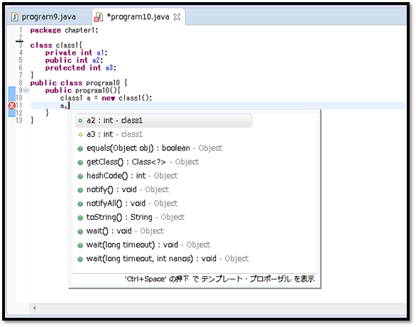
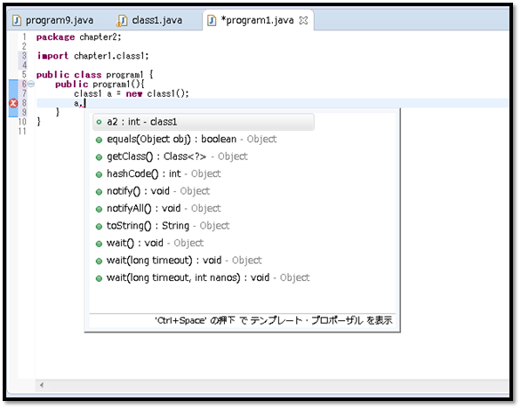
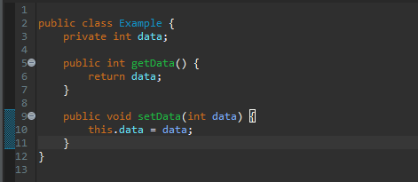
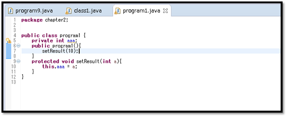

こんにちは。明月です。
このページではアクセス修飾子に関して調べてみます。
クラスやメソッドを宣言する時に、「public」、「private」、「protected」などのキーワードをみたことありますね。このキーワードがアクセス修飾子だといいます。
アクセス修飾子の役は単語の意味とおりに外部からアクセス制限する形になります。Javaの中には下記とおりにアクセス修飾子を提供しています。
| アクセス修飾子 | |
| アクセス修飾子 | 説明 |
|---|---|
| public | すべてのクラスでアクセスが可能です。 |
| private | クラスの中だけアクセスが可能です。 |
| protected | パッケージで属するクラスと経書されたクラスだけでアクセスが可能です。 |
| アクセス権限 | ||||
| アクセス修飾子 | クラス | 継承されたクラス | 同じパッケージ | すべてクラス |
|---|---|---|---|---|
| private | ○ | ☓ | ☓ | ☓ |
| (default) | ○ | ☓ | ○ | ☓ |
| protected | ○ | ○ | ○ | ☓ |
| public | ○ | ○ | ○ | ○ |
Eclipseのソースアシスタントの利用して詳しく確認します。

「class1」クラスの中には「a1」、「a2」、「a3」の３つの変数があります。この変数たちには違うアクセス修飾子を宣言しました。
「class1」の外部「program10」のクラスで見ると「a2」、「a3」だけに見えます。すなわち、「public」、「protected」が見えます。
「public」の場合はいずれもアクセスが可能な修飾子で、「protected」の場合は同じパッケージならアクセス可能なので見えることになります。
今回はパッケージを変わって確認します。

今回はパッケージを変わって「class1」を宣言しました。今度は「a2」だけ見えますね。「protected」はパッケージが変わると見えないアクセス修飾子なのでです。
それならなぜこんなアクセス修飾子があるかな。
理由はOOP(object-oriented programming)のカプセル化のためです。カプセルはクラス単位でロジックを結んで一つの部品の概念になることだと思われます。
例えば、加算検証プログラムを作成すると思います。
このクラスは外部では検証なため、「input」関数、検証の結果をリターンする「output」関数だけ提供して直接にクラス内部は操作ができないようにします。
すなわち、検証プログラムでは外部APIは「input」、「output」だけで、クラスを使うユーザによって内部は知る必要がないということです。
でも、アクセス修飾子がないことで参照するクラスでクラスの内部変数などを任意で変更ができるようにすると「OOP」の特性がなくなりますね。
結局、OOPの特性がないプログラムはJavaプログラムの品質に影響がなります。
それなら、アクセス修飾子に関して実際に使用方法に関して調べます。上の例は変数で「public」、「protected」、「private」で宣言しました。
でも、実際の業務ではルールがありますが、メンバー変数はすべて「private」で宣言します。メンバー変数の場合は外部で参照する必要がないし、必要だっても「getter」、「setter」という関数で参照します。
「getter」、「setter」の場合は変数は「private」で「public」タイプの参照関数、設定関数です。

そして関数の場合は外部で参照する関数は「public」でその以外は「protected」で宣言することがルールです。でも、内部用な関数は「private」を使う場合もあります。

- [Java] Java servletでインスタンスを初期する方法2019/10/17 07:15:48
- [Java] Spring web frameworkで発生する文字化けのEncoding設定2019/10/16 07:32:55
- [Java] Web Spring frameworkでfilter設定2019/10/15 20:12:35
- [Java] Web serviceのweb.xmlでエラーページ設定2019/10/14 20:13:44
- [Java] JPAのDAOをFactoryパターンで管理する方法2019/10/13 22:55:52
- [Java] JPAのSpring frameworkで依存性注入する方法2019/10/13 00:40:08
- [Java] JPAでDAOを生成する方法2019/10/11 07:30:14
- [Java] JPAでトランザクションの使用方法とオブサーバーパターンで共通トランザクション関数を作り方2019/10/10 07:29:43
- [Java] JPAのQuery を作り方2019/10/09 07:34:08
- [Java] JPAのEntityクラス設定(Cascade, fetch)2019/10/08 07:43:33
- [Java] JPAでpersistance.xml設定とentityクラス設定(@GeneratedValue設定)2019/10/07 07:38:13
- [Java] EclipseでJPAフレームワーク設定する方法2019/10/04 19:24:43
- [Java] Web spring frameworkのJSPで使う言語 JSTL - XML2019/10/03 20:02:06
- [Java] Web spring frameworkのJSPで使う言語 JSTL - 関数、データベース2019/10/02 21:00:22
- [Java] Web spring frameworkのJSPで使う言語 JSTL - コアー、フォーマッティング2019/10/01 21:48:08
- [Java] 日付フォーマット(SimpleDateFormat)を使う方法2020/03/25 00:36:53
- [Java] サーブレット(Servlet)の環境でファイルアップロード(プログレスバーでファイルアップロード状態を表示する方法)する方法2020/03/24 00:48:21
- [Java] Spring環境でファイルアップロード(プログレスバーでファイルアップロード状態を表示する方法)する方法2020/03/22 23:15:12
- [Java] FTPに接続してファイルをダウンロード、アップロードする方法(FTPClient)2020/03/20 02:44:36
- [Window] WindowでFTPサーバを構築する方法2020/03/19 03:27:22
- [Java] JSPのSpring環境でschedulerのcronを使う方法2020/03/18 00:24:32
- [Java] POIを利用してExcelを扱う方法2020/03/17 01:48:00
- [Java] PDFを出力する方法(itextpdf)2020/03/13 00:47:31
- [Java] ログライブラリ(log4j)を使う方法2020/03/12 00:54:39
- [Java] Jsonタイプのデータを使う方法(Gsonライブラリ)2020/03/11 00:30:15
- [Java] Base64にエンコード、デコードする方法2020/03/09 10:24:01
- [Java] cmdコマンドを実行するための方法2020/03/06 18:01:10
- [Java] メール(javax.mail)を発送する方法2020/03/05 20:07:49
- [Java] クラス複製(Clonable, Reflection)2020/03/05 00:03:19
- [Java] シリアライズ(直列化: Serializable)2020/03/03 00:03:33